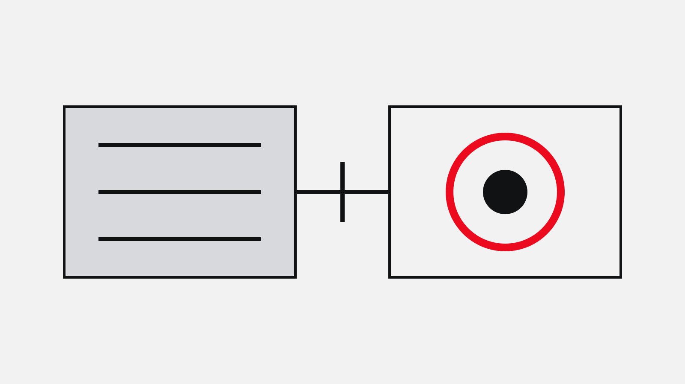
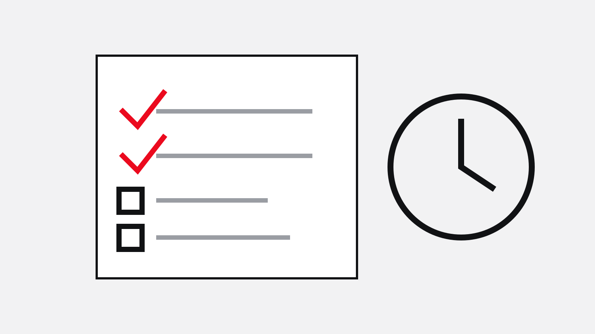
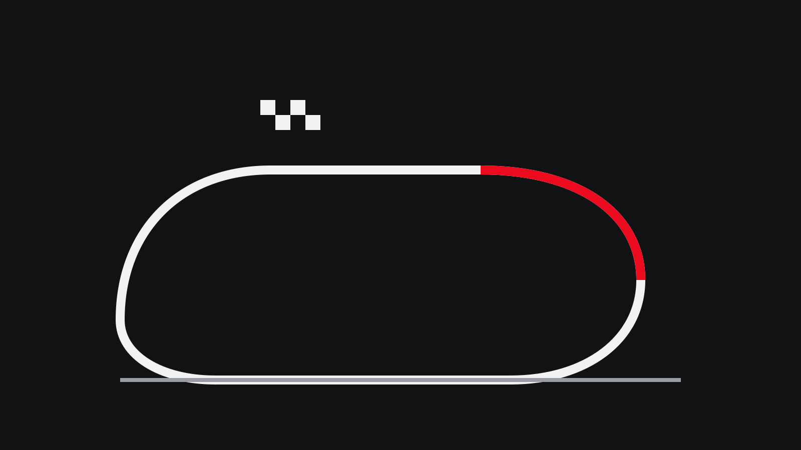
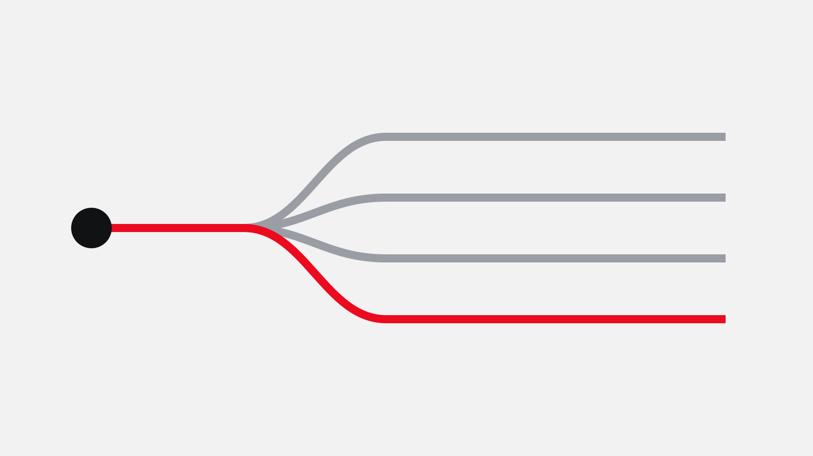
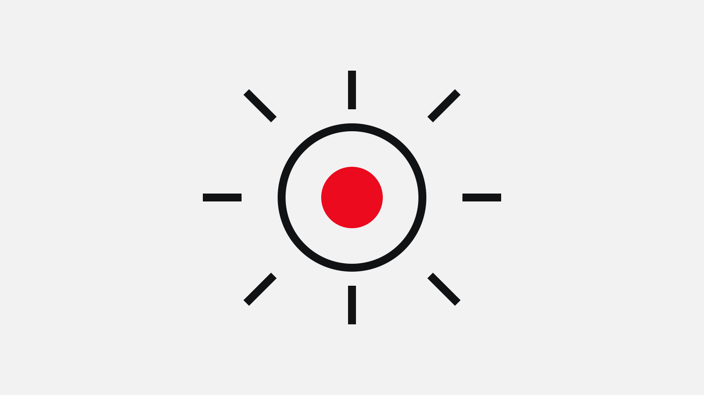
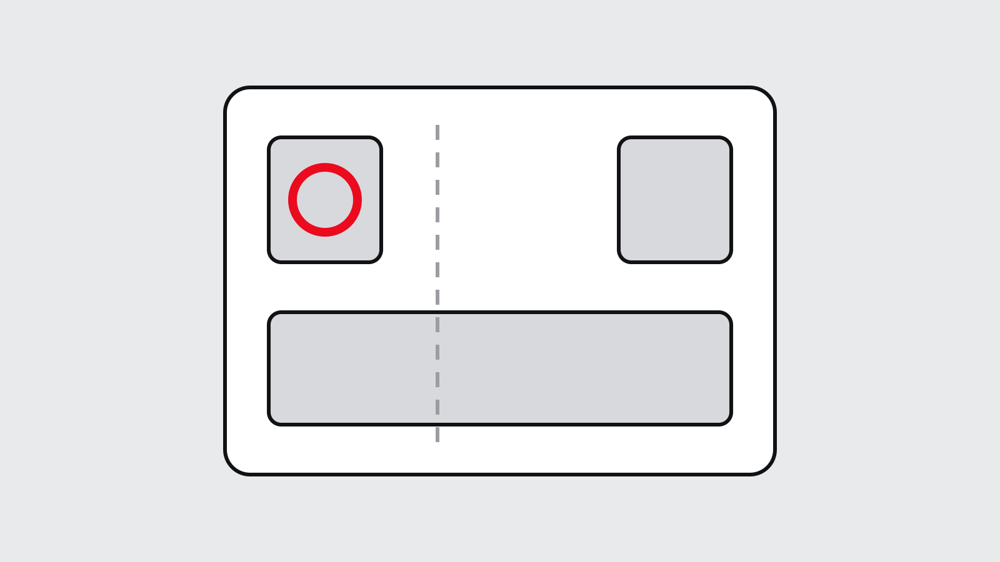
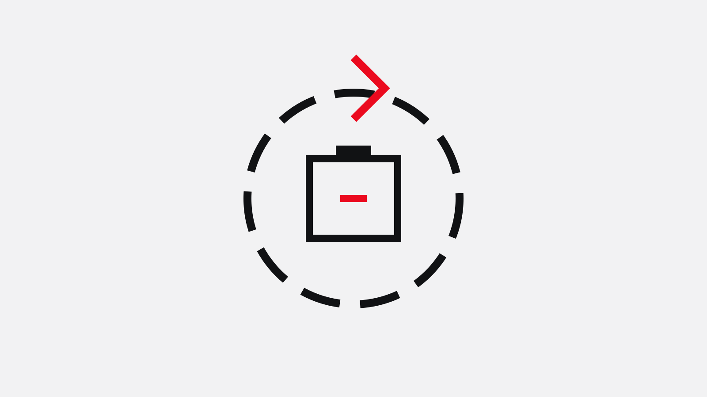
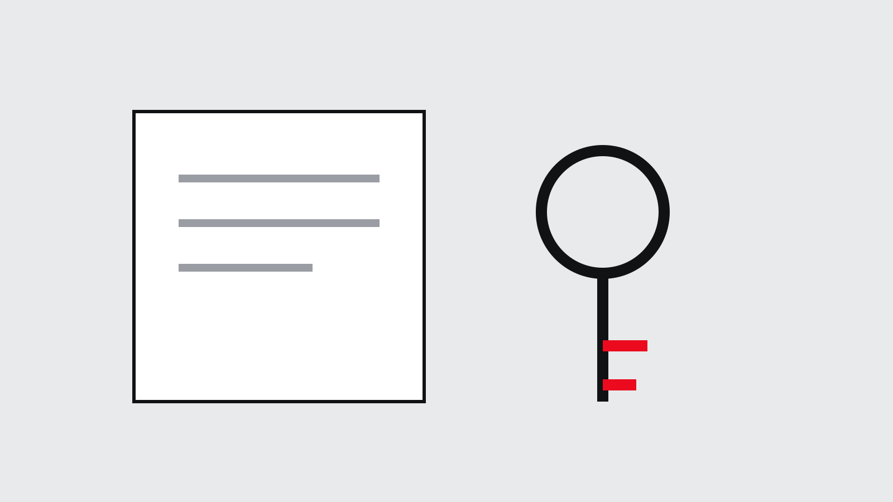
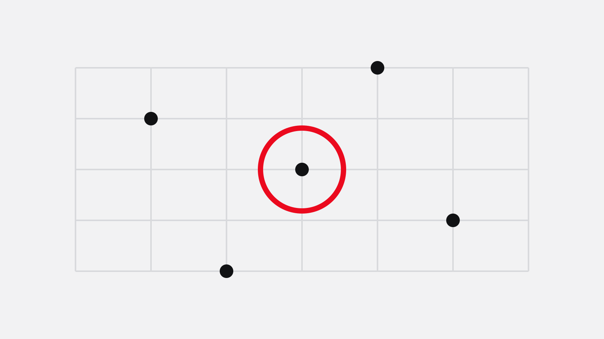

القصة المميزة
كيف تعمل تقنية تويوتا الهجينة الكهربائية
شرح مبسّط لكيفية جمع نظام الدفع الهجين ذاتي الشحن بين محرك البنزين والمحرك الكهربائي، وما يعنيه ذلك في الاستخدام اليومي.
اقرأ القصة
قصص ومقالات تقنية وإرشادات للملّاك من تويوتا في دولة الإمارات العربية المتحدة. تصفّح أحدث المستجدات أو ابحث في الأرشيف الكامل.

القصة المميزة
شرح مبسّط لكيفية جمع نظام الدفع الهجين ذاتي الشحن بين محرك البنزين والمحرك الكهربائي، وما يعنيه ذلك في الاستخدام اليومي.
اقرأ القصة
الأحدث

ما الذي تغطيه كل فترة صيانة، ولماذا تختلف الفترات بين الطرازات، وكيف تخطّط للصيانة وفق ظروف القيادة في الإمارات.

كيف تُحدّد اختبارات التحمّل أهداف المتانة، والمسار الذي يسلكه أي مكوّن من الحلبة إلى مواصفات سيارة الطريق.
إدارة الحرارة والترشيح وهندسة المواد — اعتبارات التصميم وراء مركبات مُهيّأة للعمل في درجات حرارة محيطة مرتفعة.

الهجين والهجين القابل للشحن والكهربائي بالكامل والهيدروجين جنباً إلى جنب، ولماذا تتبنّاها الأسواق بسرعات مختلفة.

قائمة موسمية تشمل الإطارات والتبريد وترشيح هواء المقصورة وحالة البطارية قبل أشد شهور السنة حرارة.
الأرشيف
13 قصة




جرّب كلمة مفتاحية أخرى، أو امسح عوامل التصفية لعرض كل القصص.